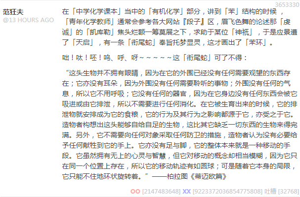

昨天在知乎回答了三个问题，用了同一个模板，但是结果泾渭分明。
对于「赎罪日战争」（或曰「第四次中东战争」），答曰：
葡萄牙机场依赖，美利坚天命昭昭。阿拉伯攒了很久的武德比较充沛，然而并没有什么卵用，最终还是费拉不堪。
对于「瓜达尔卡纳尔岛血战」，答曰：
新西兰港口依赖，美利坚天命昭昭。特大日本帝国传奇皇军攒了很久的武德比较充沛，然而并没有什么卵用，最终还是费拉不堪。
对于红色文艺《歌唱二小放牛郎》，答曰：
王二小路径依赖，八路军天命昭昭，甚大日本帝国史诗皇军攒了很久的武德比较充沛，然而并没有什么卵用，最终还是费拉不堪。
明明是「海陆空」都照顾到，可是第一条还在，后面俩都「政治敏感」而被「亦当删去」了，到底是依据了什么原则呢？奇哉。
换句话说，在我中华兲朝上国那发达的文学传统当中，已经极大丰富的修辞伎俩仍然可以与时俱进，从民间吸收鲜活的素材进一步增强旺盛的生命力。
在「带路党」一词已经是彻底贬义，随意使用会被视为「人身攻击」的情况下，来自经济学术语的「路径依赖」（Path-Dependence）就挺身而出，填补了这个修辞空白。
并且，咱还配合最近热播的各种抗日神剧，应景创作出了「褒义」的例句。不仅仅局限于境内，全世界都一样，只要联合国还在，战后国际秩序尚未崩溃，就「政治绝对正确」，各位尽管放心。
所以，今后各位网友和写手可以到处使用这个「先例」，以炮制「判例」为目的，从而以实际行动推动我中华兲朝上国「依法治网」の全面深化法律体制改革。
编者按
看啊看啊！！！就连这「钦定反汉贱种中国通」都死皮赖脸混迹于新时代中国特色社会主义大好形势下繁荣的中文互联网之上，不惜硬着头皮肿着脸自带干粮卖命，继续高举「繁荣新时代中国特色社会主义红色文艺事业」的伟大旗帜，为了「汉语言文学」的发展、「中华民族伟大复兴」等一票光荣目标，而正确奋斗。
好棒好棒！！！正所谓「汉族虐他千百遍，他待汉族如初恋」，真是「膝盖生根头顶绿得发黑贱到骨子里去了」，可见我中华兲朝上国「受命于兲既寿永昌」。
咄！各位汉语写手！呔！快快的抖擞起来急急如律令！等啥呢？麻利儿的！还不赶紧见贤思齐，齐心协力，力挽狂澜，澜倒波随，随机应变，变本加厉，厉兵秣马，马革裹尸，尸横血流，流离失所，所向披靡，靡不有初鲜克有终……哉？
昨天还在「九省通衢の煎蛋」之『段子』区，与活跃色目帐号谈笑风生：

苯环与奉旨托梦衔尾蛇
因为是自己写的，所以文字内容转贴如下：
在「中学化学课本」当中的「有机化学」部分，讲到「苯」结构的时候 ，「青年化学教师」通常会参考各大网站『段子』区，眉飞色舞的论述那「虔诚」的「凯库勒」焦头烂额一筹莫展之下，求助于某位「神祇」，于是应景遭了「天启」，有一条「衔尾蛇」奉旨托梦显灵，这才画出了「苯环」。
咄！呔！呸！呜、呼、呀～～～～～这「衔尾蛇」可了不得：
“这头生物并不拥有眼睛，因为在它的外围已经没有任何需要观望的东西存在；它亦没有耳朵，因为外围没有任何需要聆听的事物；外围没有任何的气息，所以它不用呼吸；它没有任何的器官，因为在它身边没有任何东西会被它吸进或由它排泄，所以不需要进行任何消化。在它被生育出来的时候，它的排泄物就安排成为它的食粮，它的行为及其行为之影响都源于它，亦受之于它。造物者构想出这头能够自给自足的生物，这比其它缺乏一切东西的生物来得完满。另外，它不需要向任何对象采取任何防卫的措施，造物者认为没有必要给予任何献牲到它的手上。它亦没有足与脚，它的整体本来就是一种移动的手段。它虽然拥有无上的心灵与智慧，但它对移动的概念却相当模糊，因为它只在同一个位置上存在，所以它的移动轨迹有如圆球；可是随着它本身的局限，它只能不住地环状旋转着。”
——柏拉图《蒂迈欧篇》
在我二十多年前的高中时期，并没有在化学课上听到过这种阐述，而是在一些课外「科普读物」当中了解到德意志民族化学家「凯库勒」的事迹。这事当时深信不疑，而如今半信半疑。虽然现在的中文互联网上有「辟谣」，但很可能实体书「科普读物」里面还是这么印的。
这个「段子」到未必是「汉语写手」发明历史，很可能在「德意志民族神圣罗马帝国」当时就流传开来，被睁眼看世界的「科普作家」引进，有待精通德语的网友求证。至于那当事人「化学家」自己，客观上到底是受害者呢，还是受益者？主观上到底是乐见其成呢，还是力证清白？
很明显这里面蕴含着深刻的政治和意识形态内涵，所以我才把「言必称希腊罗马的经典著作片段」一并提供。如果按照数学渣的职业习惯「不惮以最大的恶意揣测」，这种段子的流传，无论是真是假，都在引领政治和意识形态斗争新动向。
尤其是各种唯物主义专业，为了把科研成果转化为生产力，从实验室走上流水线，一定会与「世俗的利益集团」发生各种联系。那么，这「世俗」利益集团到底有没有「宗教」诉求，就是作为「在野的职业政治家兼职业神棍」的学渣我所关注的重点。
正好，昨天按照「拉丁基督教」的规矩，是「耶少爷诞辰纪念日」前夜，相关政治和意识形态纠纷在中文互联网上闹得沸沸扬扬，各位网友想必都知道了，这里不再重复。而按照「希腊基督教」的规矩，「耶少爷诞辰纪念日」是明年1月7日，所以，这些以「在商言商」替自己炒作「洋节」辩护的「商家」究竟是为了「文化搭台经济唱戏」还是真的有现实政治和宗教诉求，再等半个月就知道了。
为什么用「耶少爷诞辰纪念日」这种措辞，不仅仅是为了「政治正确」或「彰显信仰」而回避「圣」字，还是出于精确表述的目的。学术上的分析网上有得是，包括但不限于通过「马莉娅孕检领报」推算或夺取「古罗马农神节」筹备工作领导权。这里不再重复，只是对于日期不同的各种流派有个类比：
比方说当年「犹太教耶稣派」决定成立「基督教」的第一次全黎凡特代表大会的实际日期是7月23日，这才是「唯物主义历史真相の诞辰」。革命胜利之后，在白区搞地下工作的负责教务的彼得派决定以7月1日作为「耶少爷诞辰纪念日」并发红头文件层层下达昭告天下；而坚持「以费拉包围城邦，钉头锤里出政权」打游击的负责军务的保罗派，则选择了当年起事的8月1日，公开理由则是「更接近唯物主义历史真相」。
昨天还干了一件事，那就是又回旧宅拎了一堆实体书。这个礼拜的恶补基本上没有正式进度，下周还得抓紧。至于为什么，还是因为恶补计划已经调整为泛读的缘故。着重点是在「传奇数学」之前各知识点之间建立新的联系，发掘出新的政治和意识形态内涵，寻找新的脑洞，深化新的思路。
举个例子吧，前面提到了「希尔伯特曲线」相关内容，解释了「卡夫丁峡谷」的本质，若是理解不了「既是静态的也是动态的」这个观点，那么再能「闭嘴无脑手算っぽい」刷题，也不能被认为是跨越了初等数学到高等数学之间这一道鸿沟。
注意，自称「跨越」不算数，那好比神棍大忽悠把「无穷无尽无始无终不生不灭不增不减不垢不净」的描述与时俱进的加了一条「不静不动」而已。本位面实例就是对岸有活力的民间组织「一贯道」居然借鉴了网文设定修正自己的「教义」。我对于动辄贴学历证、面部带高斯模糊的毕业照，甚至成绩单的这帮「天赋爆表の钦定学霸」的印象，差不多就是「新时代一贯道」信徒的形象。
而「正本清源」的正面描述，可以用初等数学当中就应用广泛的「圆周率」解释。当代在接受过九年义务制教育并且数学学到初一以上的年轻人之间，已经众所周知「π是无限不循环小数」了。至于其数值，在「唯物主义」时期采用实验方式测量，在「闭嘴无脑手算っぽい」时期经历了具象的割圆术逼近和抽象的无穷级数逼近两个阶段，而在「赛博朋克」时期还有已经走进千家万户的「Super
Pi」这种软件可供数学爱好者实践。
计算圆周率的各种公式有得是，各取所需随便用，不啰嗦了。但是，有谁想过「算到啥时候才是个头啊」这种问题么？想到了也未必提出来，提出来会被当智障看待，因为这已经是「常识」了。
而进一步，有谁想到「谁把这圆周率算到头了啊」这种问题么？提出这个问题的，就不是智障不能嘲笑，问题本身就比较形而上学了。既然人类还不知道「实数」的时候就知道「圆周率」是个「绝对存在」，虽然只能由「意识」所理解掌握，但仍然对「物质世界实践」起到了指导作用。除了那些创作「圆周率等于四」的伪证段子手之外，没人怀疑圆周率的存在唯一稳定等性质。
也就是说，在「唯心主义」领域里面，「圆周率」已经被「算到头」了，为了「唯物主义」实践的目的，才「要多少有多少」的进行「晚绑定懒求值」。这个理解思路，才是「高等数学」的风格，可以用于所有涉及到「无穷」的命题当中去。
接下来就是继续追问，π如此，e也如此，那么其它实数呢？代数数可以写出多项式方程来，从而直观的理解其存在，而超越数就麻烦了。证明超越数存在可以构造主义，计算超越数数量可以康托主义，那么寻找超越数就比较困难了吧？前面提到了「π+e」「πe」都没能搞定，它们真的存在么？
更进一步追问，人类能表达出来的「无理数」，也是通过有限个可数字符描述的，而康托主义还能证明，这些「无理数」同样是个零测集，描述不了的「无理数」仍然远远多于这些可被人类理解的「平凡的无理数」，而那些「超凡的无理数」真的「存在」么？
在意识形态领域的深入思考到了这里，之前还不把「最基础的数学知识」当回事的业内，恐怕就乐不出来了。即便业内「暂时来不及研究」这些务虚的形而上学话题，但是也应该「严肃」的对待相关内容。
数学工作者对此可以不关心，甚至可以手抚后脑勺「嚯哈哈哈我还真没注意」插科打诨嬉皮笑脸糊弄过去，但不能高举什么伟大狼牙棒为了啥光荣目标而正确敲击天灵盖。如果所谓「数学家」同样抱着「吃饱了撑的想那么多干嘛结论好用就行」的心态，就和自己所嘲笑的那些只会「闭嘴无脑手算っぽい」的「工科生」没区别了吧？